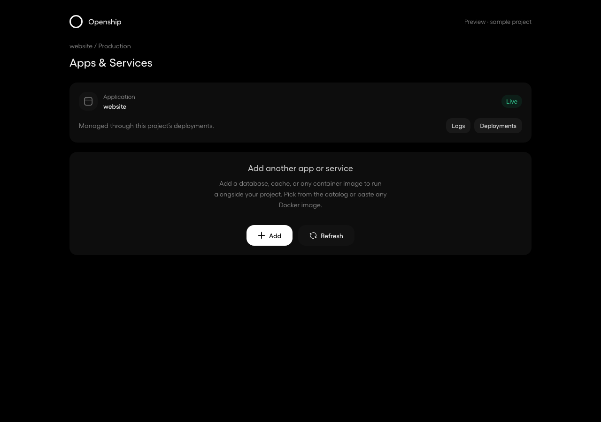
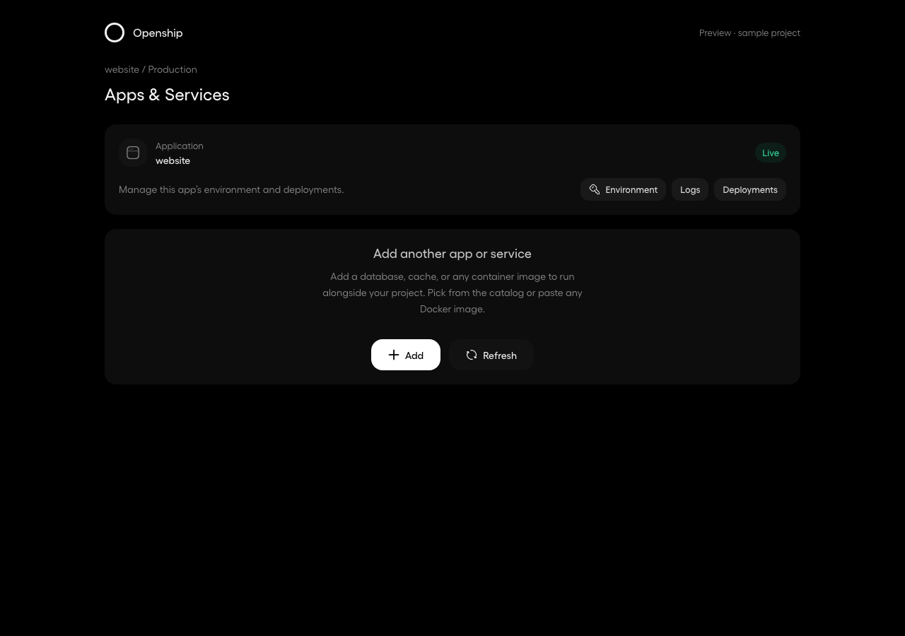
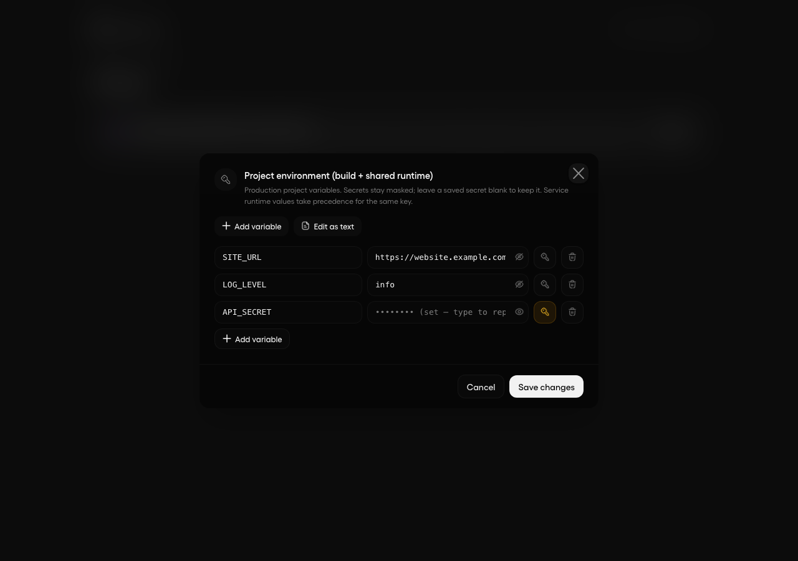
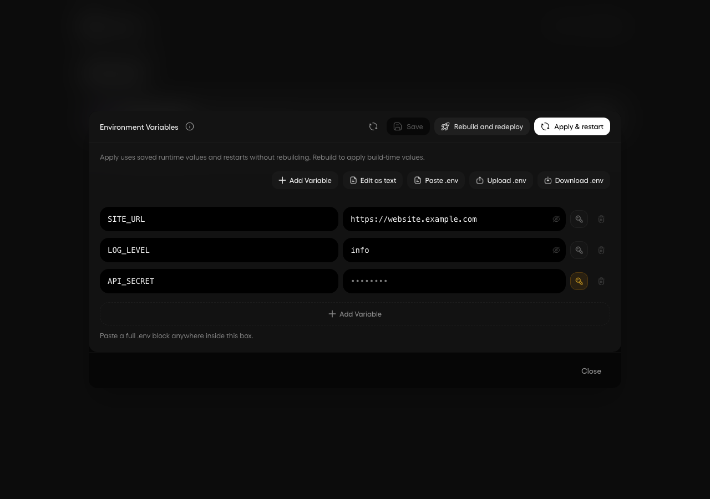
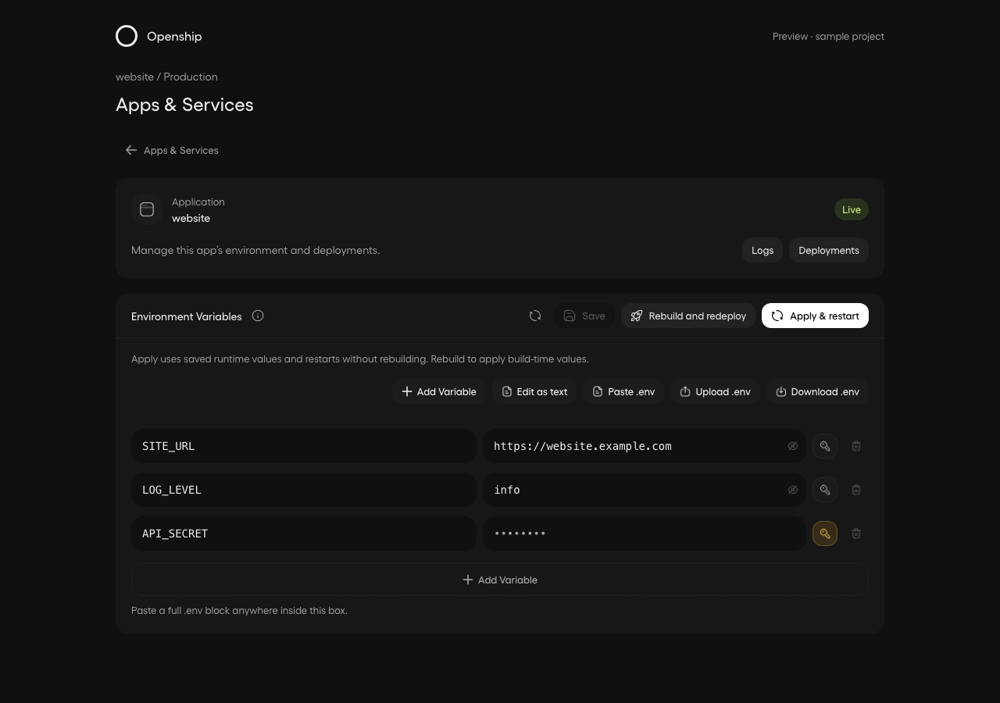
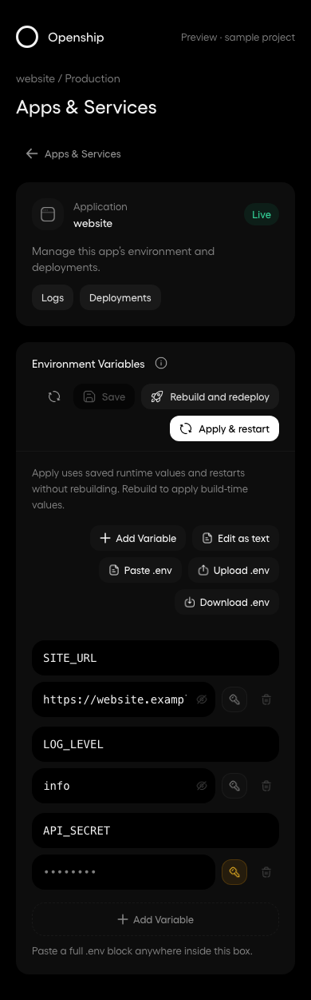
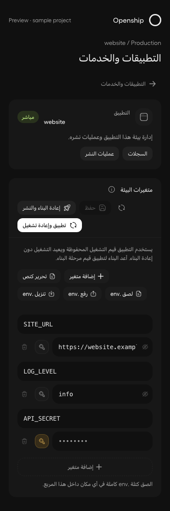

Openship · UI review
Actual dashboard components rendered with intercepted sample API data. Both baseline and updated captures use the same project and viewport. No live deployment was changed.




Save, reload, Apply & restart, and Rebuild & redeploy stay together. Settings opens this same panel.

Dark theme · Light theme · Apply progress · Docker app with roles

